전자캐드기능사 (2015-01-25 기출문제)
1과목: 전기전자공학(대략구분)
1. 다이오드-트랜지스터 논리회로(DTL)의 특징이 아닌 것은?
- 소비전력이 적다.
- 잡음여유도가 크다.
- 응답속도가 비교적 빠르다.
- 저속도 및 중속도에서 동작이 안정하다.
(정답률: 47%)

2. 전동기에서 전기자에 흐르는 전류와 자속, 회전방향의 힘을 나타내는 법칙은?
- 렌츠의 법칙
- 플레밍 왼손 법칙
- 플레밍 오른손 법칙
- 앙페르의 오른손 법칙
(정답률: 68%)
3. 이미터 접지회로에서 I B = 10[㎂], I C = 1[㎃] 일 때 전류 증폭률 β 는 얼마인가?
- 10
- 50
- 100
- 120
(정답률: 63%)
4. 5[㎌]의 콘데서에 1[㎸]의 전압을 가할 때 축적되는 에너지[J]는?
- 1.5[J]
- 2.5[J]
- 5.5[J]
- 10[J]
(정답률: 69%)
5. 펄스 증폭회로의 설명으로 틀린 것은?
- 저역특성이 양호하면 새그가 감소한다.
- 결합콘덴서를 크게 하면 새그가 감소한다.
- 고역특성이 양호하면 입상의 기울기가 개선된다.
- 고역보상이 지나치면 언더슈트가 발생한다.
(정답률: 59%)
6. 이상적인 연산증폭기의 주파수 대역폭으로 가장 적합한 것은?
- 0 ~ 100 [㎑]
- 100 ~ 1000 [㎑]
- 1000 ~ 2000 [㎑]
- 무한대(∞)
(정답률: 79%)
7. 9[㎌]의 같은 콘덴서 3개를 병렬로 접속하면 콘덴서의 합성용량은?
- 3[㎌]
- 9[㎌]
- 27[㎌]
- 81[㎌]
(정답률: 79%)
8. 자체 인덕턴스가 10[H]인 코일에 1[A]의 전류가 흐를 때 저장되는 에너지는?
- 1[J]
- 5[J]
- 10[J]
- 20[J]
(정답률: 56%)
9. N형 반도체를 만드는 불순물은?
- 붕소(B)
- 인듐(In)
- 갈륨(Ga)
- 비소(As)
(정답률: 79%)
10. 연산 증폭기의 설명으로 틀린 것은?
- 직렬 차동 증폭기를 사용하여 구성한다.
- 연산의 정확도를 높이기 위해 낮은 증폭도가 필요하다.
- 차동 증폭기에서 TR 특성의 불일치로 출력에 드리프트가 생긴다.
- 직류에서 특정 주파수 사이의 되먹임 증폭기를 구성, 일정한 연산을 할 수 있도록 한 직류 증폭기이다.
(정답률: 63%)
11. TR을 A급 증폭기(활성영역)로 사용할 때 바이어스 상태를 옳게 표현한 것은?
- B-E : 순방향 Bias, B-C : 순방향 Bias
- B-E : 역방향 Bias, B-C : 역방향 Bias
- B-E : 순방향 Bias, B-C : 역방향 Bias
- B-E : 역방향 Bias, B-C : 순방향 Bias
(정답률: 74%)
12. 진공관에서 음극 표면의 상태가 고르지 못해 전자의 방사가 시간적으로 일정하지 않아 발생하는 잡음으로 가청 주파수대에서만 일어나는 잡음은?
- 열잡음
- 산탄 잡음
- 플리커 잡음
- 트랜지스터 잡음
(정답률: 69%)
13. 평활회로의 출력 전압을 일정하게 유지시키는데 필요한 회로는?
- 안정화(정전압)회로
- 브리지정류회로
- 전파정류회로
- 정류회로
(정답률: 75%)
14. 주파수 변조 방식에 대한 설명으로 가장 적합한 것은?
- 반송파의 주파수를 신호파의 크기에 따라 변화 시킨다.
- 신호파의 주파수를 반송파의 크기에 따라 변화 시킨다.
- 반송파와 신호파의 위상을 동시에 변화 시킨다.
- 신호파의 크기에 따라 반송파의 크기를 변화 시킨다.
(정답률: 46%)
15. 다음 회로에서 공진을 하기 위해 필요한 조건은?
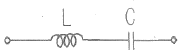
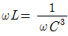
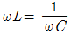
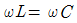
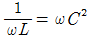
(정답률: 81%)
2과목: 전자계산기일반(대략구분)
16. 다음 연산증폭기 회로에서 Z = 50[㏀], Z 1
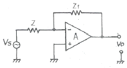
- 0.5
- -0.5
- 10
- -10
(정답률: 56%)
17. 읽기 전용 메모리로서 전원이 끊어져도 기억된 내용이 소멸되지 않는 비휘발성 메모리는?
- ROM
- I/O
- control Unit
- register
(정답률: 84%)
18. 마이크로프로세서(Microprocessor)를 이용하여 컴퓨터를 설계할 때의 장점이 아닌 것은?
- 소비전력의 증가
- 제품의 소형화
- 시스템 신뢰성 향상
- 부품의 수량 감소
(정답률: 72%)
19. 데이터를 중앙처리장치에서 기억장치로 저장하는 마이크로명령어는?
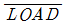
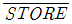
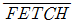
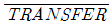
(정답률: 75%)
20. 서브루틴의 복귀 주소(Return Address)가 저장되는 곳은?
- Stack
- Program Counter
- Data Bus
- I/O Bus
(정답률: 65%)
21. 다음 C 프로그램의 실행 결과는?
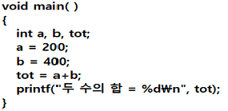
- tot
- 600
- 두 수의 합 = 600
- 두 수의 합 = tot
(정답률: 83%)
22. 마이크로프로세서에서 누산기(accumulator)의 용도는?
- 연산 결과를 일시적으로 삭제
- 오퍼레이션 코드를 인출
- 오퍼레이션의 주소를 저장
- 연산 결과를 일시적으로 저장
(정답률: 86%)
23. 컴퓨터의 주변장치에 해당되는 것은?
- 연산장치
- 제어장치
- 주기억장치
- 보조기억장치
(정답률: 73%)
24. 자료의 단위가 작은 크기에서 큰 크기순으로 나열된 것은?
- 니블 < 비트 < 바이트 < 워드 < 풀워드
- 비트 < 니블 < 바이트 < 하프워드 < 풀워드
- 비트 < 바이트 < 하프워드 < 풀워드 < 니블
- 풀워드 < 더블워드 < 바이트 < 니블 < 비트
(정답률: 66%)
25. 명령어의 오퍼랜드 부분과 프로그램카운터의 내용이 더해져 실제 데이터의 위치를 찾는 주소지정방식을 무엇이라 하는가?
- 직접주소 지정 방식
- 간접주소 지정 방식
- 상대주소 지정 방식
- 레지스터주소 지정 방식
(정답률: 47%)
26. 코드 내에 패리티 비트(parity bit)가 있어 전송 시에 오류 검사가 가능한 코드는?
- ASCII 코드
- gray 코드
- EBCDIC 코드
- BCD 코드
(정답률: 53%)
27. 플립플롭으로 구성되는 레지스터는 어떤 기능을 수행하는가?
- 기억
- 연산
- 입력
- 출력
(정답률: 62%)
28. 2진수 (11001)2에서 1의 보수는?
- 00110
- 00111
- 10110
- 11110
(정답률: 81%)
29. 도면에서 표제란(Title panel)의 위치로 옳은 것은?
- 오른쪽 아래
- 오른쪽 위
- 왼쪽 아래
- 왼쪽 위
(정답률: 82%)
30. 거버(Gerber) 파일에 관한 설명 중 틀린 것은?
- 거버 형식은 파일 파라미터와 기능 명령의 2가지 요소로만 되어 있다.
- PCB 필름과 마스터 포토 툴을 생성하는데 쓰이는 표준이다.
- 거버 형식은 단순히 회로의 이미지를 만드는데 필요한 정보를 포함한다.
- 인터프리터를 이용하여 포토 플로터나 레이저 이미지를 필름이나 다른 미디어에 이미지를 생성하도록 하는 형식이다.
(정답률: 47%)
3과목: 전자제도(CAD) 이론(대략구분)
31. PC CAD의 도입에 따른 장점이 아닌 것은?
- PCB 재료의 원가 절감을 할 수 있다.
- 회로의 오류 및 오차를 줄일 수 있다.
- 정확하고 효율적인 작업으로 개발기간이 단축된다.
- 제품에 대한 신뢰도가 향상되고 불량률이 저하된다.
(정답률: 75%)
32. 다음 중 설계 규칙 검사를 나타내는 용어는?
- Back Annotate
- DRC
- Netlist
- Export
(정답률: 75%)
33. Layout 작업 시 실장밀도를 높이기 위해 고려해야 할 사항이 아닌 것은?
- 도면의 크기
- 사용부품의 치수
- 배선폭과 배선간격
- Through Hole의 위치와 치수
(정답률: 53%)
34. A/D변환기 회로와 같이 아날로그와 디지털 부분이 같이 있는 경우 도면에서 회로를 격리하고 접지 등 전원선을 별도로 그리는 것이 일반적인데, 다음 중 어떤 현상을 고려해야 하기 때문인가?
- 유도 현상
- 발진 현상
- 스위칭 현상
- 증폭 현상
(정답률: 63%)
35. 전자캐드(CAD)에 주로 사용되는 출력장치로 적합한 것은?
- 레이저 프린터, 스캐너, 포토 플로터
- 포토 플로터, X-Y 플로터, 타블렛
- 레이저 프린터, 포토 플로터, X-Y 플로터
- ZIP 드라이브, 레이저 프린터, 스캐너
(정답률: 72%)
36. PCB 제조공정은 어떤 방법에 의해 소정의 배선만 남기고, 다른 부분의 패턴을 제거할 것인가 하는 점이 중요하다. 다음 중 대표적으로 사용되는 에칭(패턴제거방법)방법이 아닌 것은?
- 사진 부식법
- 실크 스크린법
- 플렉시블 인쇄법
- 오프셋 인쇄법
(정답률: 57%)
37. 자기장이 분포되어 있어 평판에 버튼커서 또는 스타일러스 펜이라고 불리는 위치 검출기를 이동시켜 도면위치에 대응하는 X, Y 좌표를 입력하는 장치는?
- 트랙볼
- X-Y 플로터
- 디지타이저
- 이미지 스캐너
(정답률: 63%)
38. 시퀀스 제어용 기호와 설명이 옳게 짝지어진 것은?
- PT : 계기용 변압기
- TS : 과전류 계전기
- OCR : 텀블러 스위치
- ACB :유도 전동기
(정답률: 60%)
39. 다음 그림의 세라믹 콘덴서이다. 용량 값은?
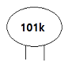
- 0.01[㎌]
- 10[㎊]
- 1000[㎊]
- 0.0001[㎌]
(정답률: 63%)
40. 드레인(D) 소스(S) 게이트(G) 3개의 전극으로 구성되어 있으며 n채널과 p채널로 나누는 부품은?
- PUT
- FET
- SCR
- 트랜지스터
(정답률: 64%)
41. PCB에서 패턴의 폭이 10[mm], 두께가 2[mm]이고 길이가 3[㎝]일 때 패턴의 저항(R)은? (단, 20[℃]에서 구리의 저항률은 1.72×10-8 [Ω]이다.)
- 0.258×10-6 [Ω]
- 2.58×10-8 [Ω]
- 5.16×10-6 [Ω]
- 5.16×10-8 [Ω]
(정답률: 57%)
42. 다음 중 사용 부품이나 소자를 실물 크기로 기호화 하고, 단자와 단자 사이를 선으로 직접 연결하는 접속 도면을 무엇이라 하는가?
- 연속선 접속도
- 피드선 접속도
- 고속도형 접속도
- 기선 접속도
(정답률: 58%)
43. 전자응용기기의 전체적인 동작이나 기능을 나타내는 블록도를 그리고자 할 때의 설명으로 틀린 것은?
- 블록은 직사각형으로 그리며 선의 굵기는 0.3 ~ 0.5㎜ 정도로 한다.
- 블록안에는 전자 소자의 명칭이나 기능 등을 간단하게 표시한다.
- 블록도의 신호는 오른쪽에서 왼쪽 방향으로 흐르도록 한다.
- 블록도에는 전원 및 보조 회로를 포함하여 그리기도 한다.
(정답률: 80%)
44. 전자 CAD를 사용하는 기능이라고 보기 어려운 것은?
- 회로도를 쉽게 수정할 수 있다.
- 효율적인 부품배치 및 배선이 용이하다.
- 부품을 스캔하여 모델링 할 수있다.
- 부품과 선간에 이루어지는 상호간섭과 같은 잡음의 발생을 최소화 할 수 있다.
(정답률: 60%)
45. 출력 장치인 펜 플로터 중 전기, 전자, 통신 분야에서 배선도, 접속도 등의 선도를 그리는 경우에 주로 사용 되는 것은?
- X-Y형
- 드럼(drum)형
- 잉크젯(Inkjet)형
- 플레이트 베드(plate bed)형
(정답률: 56%)
46. 전자 CAD 프로그램에서 편집 기능 명령과 거리가 먼 것은?
- 이동
- 복사
- 붙이기
- 호출
(정답률: 80%)
47. 다층 PCB 구조에서 층과 층을 통과하여 신호 패턴을 연결하는데, 이 때 층간을 접속하기 위한 것은?
- Pad hole
- Land hole
- Pin hole
- Via hole
(정답률: 65%)
48. 도면작성 후 PCB Artwork 또는 시뮬레이션을 하기 위해 부품 간의 연결 정보를 가지고 있는 데이터 파일이 생성되는데, 이 파일의 명칭은?
- Library
- Netlist
- Component
- Symbol
(정답률: 67%)
49. 고주파를 사용하는 회로도를 설계 시 유의할 점이 아닌 것은?
- 배선의 길이는 될 수 있는 대로 짧아야 한다.
- 회로의 중요 요소에는 바이패스 콘덴서를 붙여야 한다.
- 배선이 꼬인 것은 코일로 간주되므로 주의해야 한다.
- 유도될 수 있는 고주파 전송 선로는 다른 신호선과 평행하게 한다.
(정답률: 63%)
50. PCB의 설계 시 고주파 부품 및 노이즈에 대한 대책 방법으로 옳은 것은?
- 부품을 세워 사용한다.
- 가급적 표면 실장형 부품(SMD)을 사용한다.
- 고주파 부품을 일반회로와 혼합하여 설계한다.
- 아날로그와 디지털 회로는 어스 라인을 통합한다.
(정답률: 67%)
51. PCB 설계 시 제품의 케이스(CASE)에 의해 제약을 받지 않는 것은?
- 높이 제한
- 부품실장 금지대
- 패턴의 금지대
- 패턴의 폭
(정답률: 49%)
52. CAD 시스템 좌표계가 아닌 것은?
- 역학 좌표
- 절대 좌표
- 상대 좌표
- 극 좌표
(정답률: 77%)
53. 전기 신호의 중계, 제어 등을 행하는 기구 부품(electro-mechanical component)이 아닌 것은?
- 커넥터
- 소켓
- 스위치
- 다이오드
(정답률: 52%)
54. ( 2 S A 562 B)는 반도체 소자의 형명을 나타낸 것이다. 3번째 항의 문자 A는 무엇을 나타내는가?
- NPN형 저주파
- PNP형 저주파
- PNP형 고주파
- NPN형 고주파
(정답률: 67%)
55. 다음 ( ) 안에 알맞은 용어는?
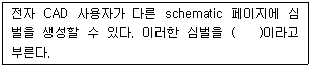
- 적층
- 본딩
- 프리플레그
- 계층구조블럭
(정답률: 50%)
56. 다음 5색 저항의 값과 오차가 옳은 것은?
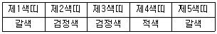
- 10[㏀], ±5%
- 100[㏀], ±5%
- 10[㏀], ±1%
- 100[㏀], ±1%
(정답률: 58%)
57. 주문 받은 사람이 주문한 사람과 검토를 거쳐서 승인을 받아 계획 및 제작을 하는데 기초가 되는 도면은?
- 제작도
- 주문도
- 승인도
- 견적도
(정답률: 58%)
58. 인쇄회로기판 설계 시에 사용하는 단위가 아닌 것은?
- ㎜
- grid
- inch
- mils
(정답률: 72%)
59. 인쇄회로기판 설계 시 배선에 흐르는 전류량에 따라 고려할 사항으로 옳은 것은?
- 기판의 재질과 두께
- 배선의 폭과 동박의 두께
- 동박의 두께와 배선의 모양
- 배선의 배열과 기판의 두께
(정답률: 55%)
60. 플렉시블 PCB의 재료로 사용하는 것은?
- 종이페놀 인쇄회로기판
- 유리에폭시 인쇄회로기판
- 세라믹 인쇄회로기판
- 폴리이미드 필름 인쇄회로기판
(정답률: 58%)